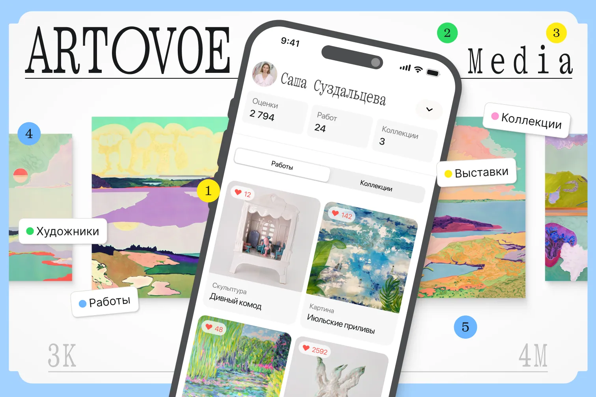
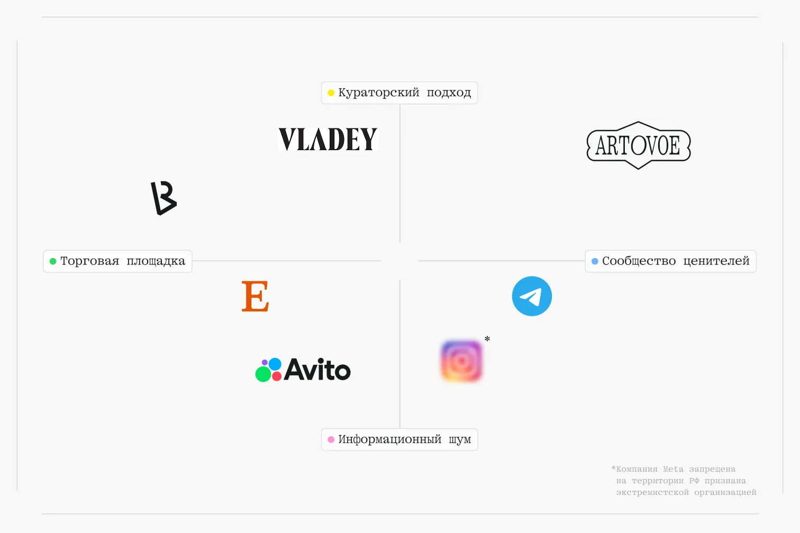
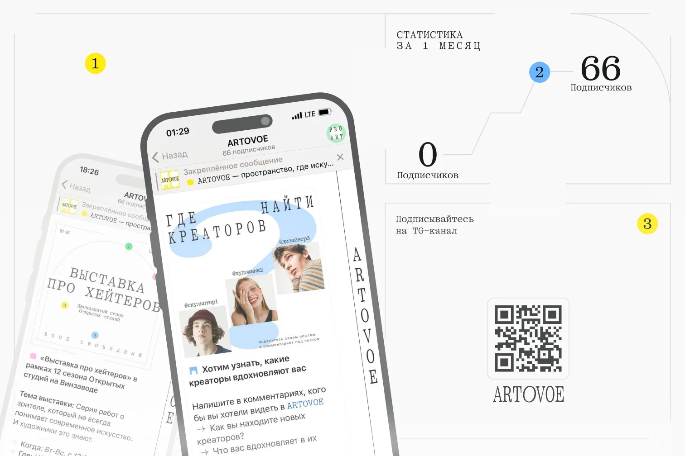
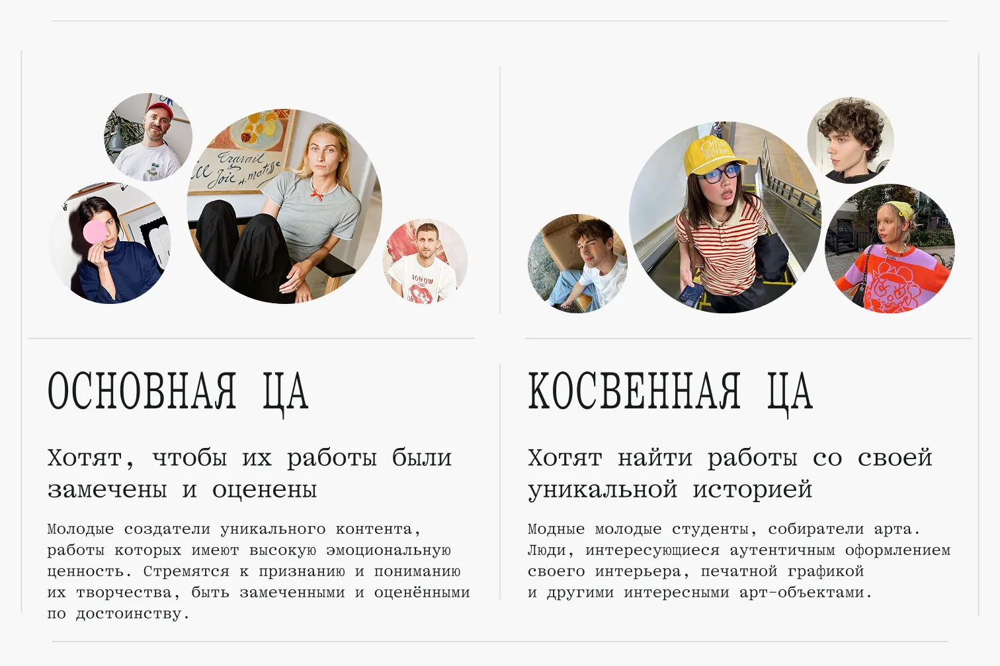
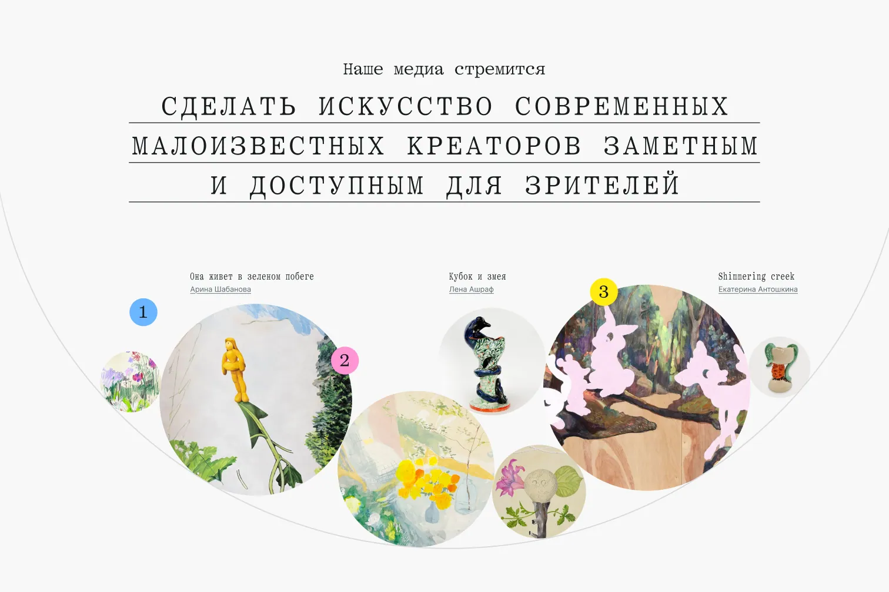
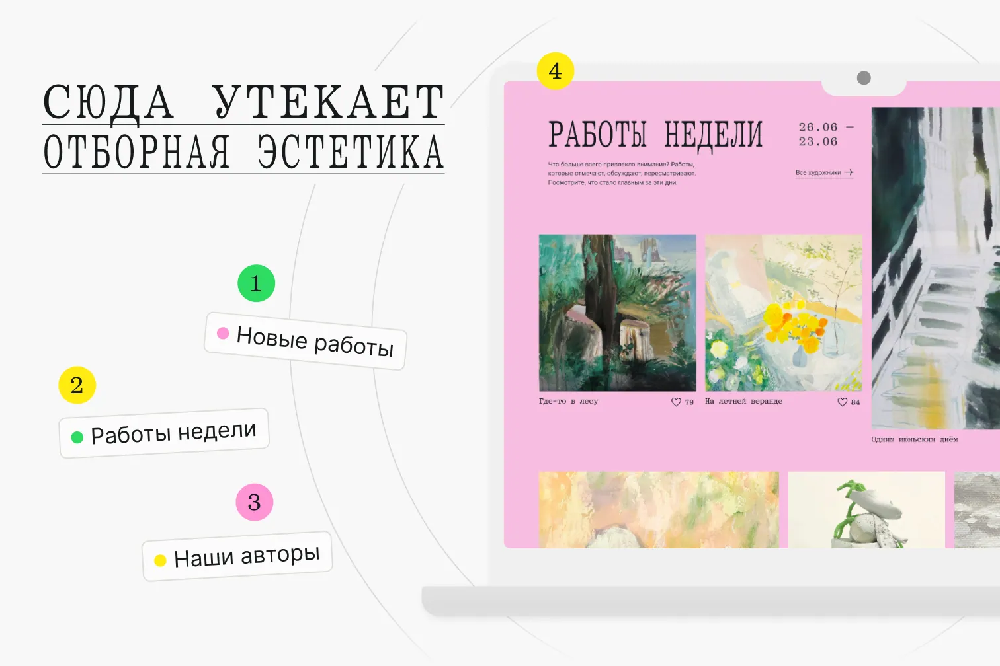
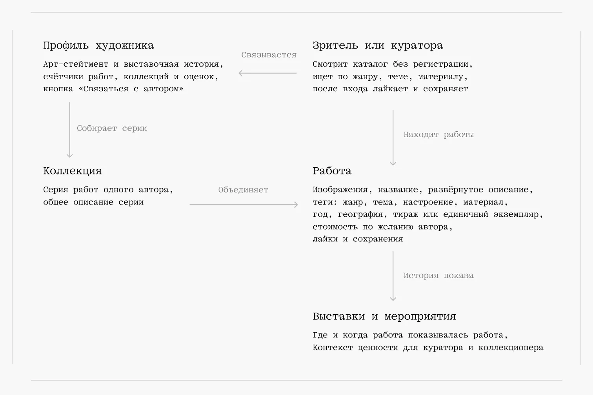
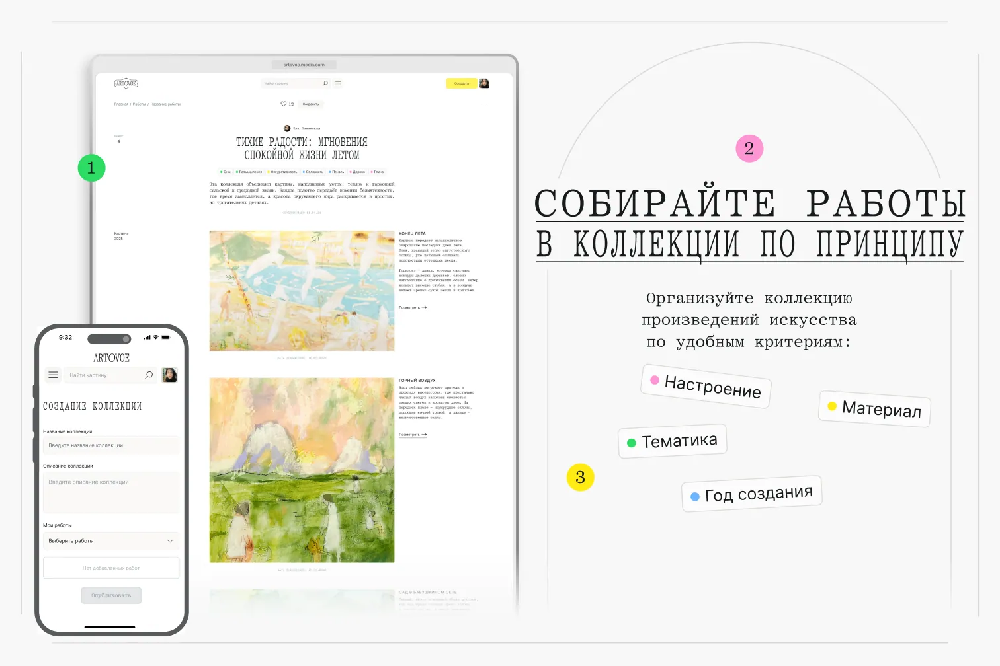
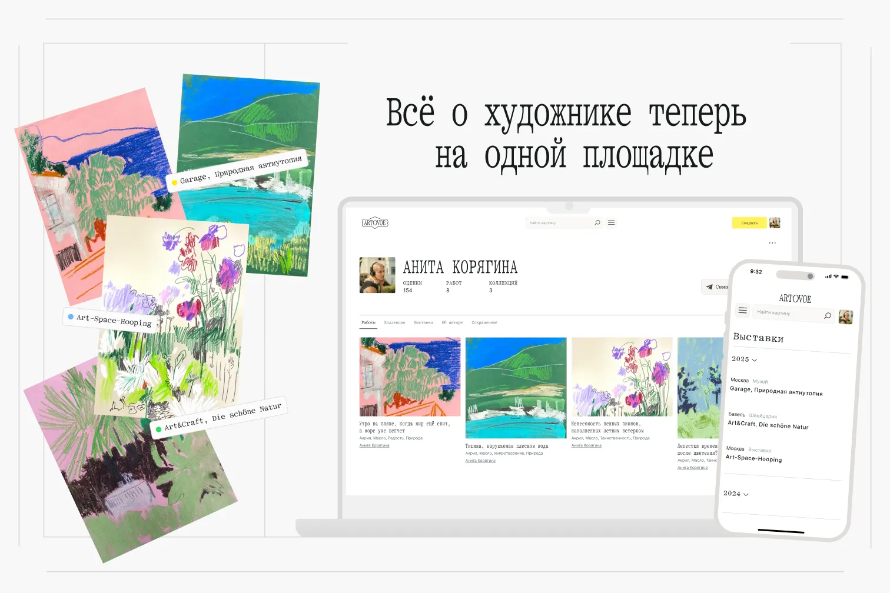

Рус

Цифровой каталог молодого искусства вне ленты алгоритмов
Artovoe — медиакаталог работ молодых художников, в котором каждая работа живёт вместе со своим контекстом, рядом с автором, серией и историей выставок. Мы сделали его втроём в HSE Art and Design как учебный MVP, и в итоге он собрался в работающее веб-приложение на Ruby on Rails.
| Период | февраль 2024 — июль 2024 |
| Проект | Учебный, командный |
| Моя роль | UX-UI, Разработка |
| Награды | 2 место DAFES, Цифровой продукт |
Контекст
Студенты направления «Современное искусство» НИУ ВШЭ рассказывали нам одну и ту же историю. Чтобы работы кто‑то увидел, художнику приходится становиться ещё и медийным человеком, однако в алгоритмической ленте Instagram локальное творчество быстро тонет, а Telegram-каналы приходится искать и листать вручную. Похожую картину мы видели и на арт-маркетах, где о молодых авторах узнаёшь, только если пришёл туда лично.
При этом смысл работы в современном искусстве складывается из контекста и интерпретации, и как раз этот контекст лента срезает. Вдобавок в поле действуют сразу несколько участников со своей логикой, ведь художник ищет автономии, зритель ориентира, институции порядка, а алгоритмы измеримой видимости. Поэтому задачу мы сформулировали так.
Нужно сделать молодых авторов видимыми и при этом не превратить их искусство в упрощённую единицу контента

Ева Ливинская
Мой близкий друг и один из соавторов проектаИсследование
Сначала мы разложили площадки, где сегодня живёт молодое искусство, по двум осям. Одна идёт от кураторского отбора к информационному шуму, другая от торговли к сообществу ценителей. Маркетплейсы вроде Etsy и Avito в итоге работают на сделку, а соцсети и Telegram-каналы собирают сообщество без всякого отбора. Угол, где отбор встречается с сообществом, оказался свободным, туда мы и поставили Artovoe.

Спрос мы проверили самым дешёвым способом и запустили Telegram-канал с подборками, историями художников и вопросами к аудитории. За первый месяц без бюджета на него подписались 66 человек, а на опен-колл для молодых авторов откликнулись 22 художника. По сути, авторы были готовы отдать свои работы курируемой площадке, которой ещё не существовало, и это стало для нас сигналом двигаться дальше.

Целевая аудитория
Аудиторий у проекта две. Основная состоит из молодых художников, которые хотят, чтобы их работы заметили и оценили. Косвенная объединяет студентов, начинающих коллекционеров и всех, кто ищет для интерьера печатную графику или арт-объекты со своей историей.

Проблемы
Разговоры с художниками и месяц жизни Telegram-канала дали довольно ясную картину. Канал быстро упёрся в те же ограничения, что и любая лента, ведь в нём нет профиля автора, нет поиска по работам, а старые публикации уходят вниз. По сути, одни и те же пробелы мешали и художнику, и зрителю, поэтому мы свели их к трём проблемам, от которых затем отталкивались при проектировании продукта.
- Работа теряет контекст. Художнику негде показать её вместе с серией и историей выставок, поэтому портфолио приходится собирать в PDF или растягивать по постам, где оно быстро теряет структуру.
- Автора трудно найти. Зритель, куратор или коллекционер редко выходит за пределы своего круга, потому что лента показывает популярное, а поиска по работам в каналах нет.
- Позицию автора не видно. Даже найдя художника, куратор с трудом понимает, в чём его позиция и где он уже выставлялся, поскольку стейтмент и выставочная история нигде не собраны вместе.
Идея
Отсюда выросла идея курируемого медиакаталога, устроенного по логике каталога с его порядком и контекстом. В нём есть только отобранные работы, каждая показана вместе со своей историей, а зрителя или куратора каталог сводит с художником напрямую.
Проект не берёт на себя роль арбитра вкуса и оставляет интерпретацию зрителю. По той же причине мы не ставили в центр коммерцию, так что цену автор указывает по желанию, а разговор о покупке начинается с кнопки «Связаться с автором». Вдобавок каталог не ранжирует авторов по частоте публикаций, и видимость работы в нём определяют отбор и контекст.

Цифровой продукт
В центре модели стоит работа, и всё остальное нужно, чтобы дать ей контекст. У работы есть описание, семантические теги, год, география и тиражность, а вдобавок список выставок и мероприятий, где она участвовала. На арт-рынке история показов повышает ценность работы и вес автора, поэтому выставкам в интерфейсе отдан отдельный блок, а коллекция собирает работы одной серии на общей странице.

Модель
В центре модели стоит работа, а коллекция, профиль художника и разделы каталога нужны, чтобы дать ей контекст. Дальше я разберу каждую из этих сущностей отдельно, примерно в том порядке, в каком с ними сталкивается зритель.

Работа
Страница работы собирает изображения, описание и семантические теги, а вдобавок год, географию, тиражность и цену, которую автор указывает по желанию. Ниже идёт список выставок и мероприятий, где работа участвовала, ведь на арт-рынке история показов повышает её ценность.

Коллекция
Коллекция объединяет работы одной серии на общей странице с собственным описанием. Автор собирает её по настроению, материалу, теме или году создания, и в итоге отдельные работы начинают читаться вместе, получая общий смысл, которого нет у каждой по отдельности.

Профиль художника
Профиль показывает все работы, коллекции и выставки автора вместе с его арт-стейтментом и счётчиком оценок. Его читают две аудитории, поэтому широкому зрителю хватает самих работ и ироничных микротекстов, а куратор находит здесь стейтмент и выставочную историю по годам.

По сути, публичная страница закрепляет за молодым автором позицию в профессиональном поле. Кнопка «Связаться с автором» открывает контакт, который художник указал сам, будь то ВКонтакте, Telegram или почта, причём гость видит её даже без регистрации.

Разделы каталога
Каталог делится на разделы «Работы», «Коллекции» и «Художники», а стартовая страница собирает новые работы, работы недели и авторов. Работы недели считаются по числу лайков, а в разделах есть фильтры по жанру, теме, настроению и материалу и сортировка по популярности.

Навигация при этом собрана из кодов выставочного пространства. Между разделами зритель идёт стрелками слева направо, как вдоль стены в зале, а меню развёрнуто на весь экран и нарисовано как план здания. Узнавая эти коды, зритель переносит на каталог привычный режим внимательного смотрения.

Результаты
Сильной стороной проекта стал его характер, честный, сюрный и с ироничной постструктуралистской интонацией.
Следующая версия проекта начнётся с полноценного запуска и бета-теста с авторами опен-колла, а дальше логично развивать кураторские подборки, подписку на инструменты продвижения и партнёрства с галереями.
22
Художника откликнулось на опен-колл
66
Подписчиков канала за первый месяц
2
Место на DAFES в номинации «Цифровой продукт»